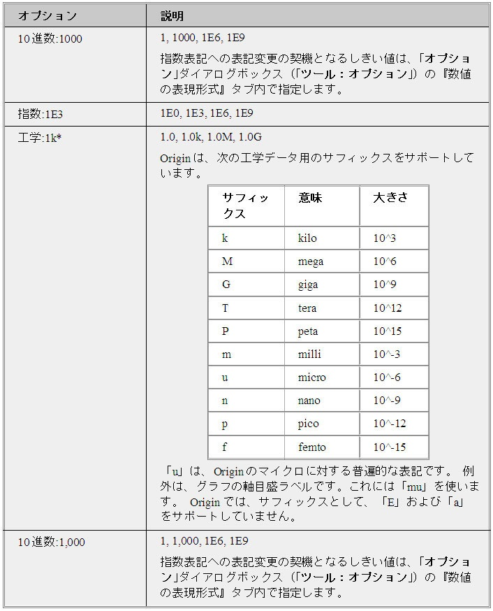

内容 |
プロパティをセット...
アクティブ行列のプロパティをセットします。
このコマンドはスクリプトからアクセスできません。
mproperty
mproperty Xファンクションは、行列オブジェクトの内部データ型、データ形式、データの表示形式をセットするのに使われます。つまり、例えば、行列シート内の各オブジェクトが異なる内部データ型(メモリアロケーションを決定)や異なる形式での数値を表示します。
このXファンクションを開くには2つの方法があります。
mpropertyと入力するこれらの操作は、行列ウィンドウがアクティブな場合のみ有効であることに注意してください。
各フィールドの説明は下記のようになります。
列幅
文字単位でセルの幅を指定します。
表示
表示 ドロップダウンリストを使って、十進数、工学、科学の表示形式を選択します。

桁数:
デフォルトの小数点 桁数 を選択すると、オプションダイアログボックス (ツール：オプション)の数値の表現形式タブにある 小数点の桁数 設定で、行列のセル内のすべての桁数を表示します。
小数点桁数 = を選択して、小数点の後に表示する桁数を制御します。(オプションダイアログボックスの数値の表現形式タブにある 小数点の桁数 設定を上書きします。) テキストボックスに目的の小数点桁数 (n) を入力します。この値は、小数点の後に表示する最大の桁数を決定します。フィールドが空白の場合、デフォルト値(これはDouble (8)の内部データ型に対して5)が使われます。
有効桁数 = を選択して、表示する有効桁数を制御します。テキストボックスに目的の有効桁数を入力します。
データ型
Double型のデータ型だけが欠損値をサポートします。これは曲線フィットや高い精度での数学演算を実行する場合に推奨されます。
次のサンプルは行列のプロパティをセットします。